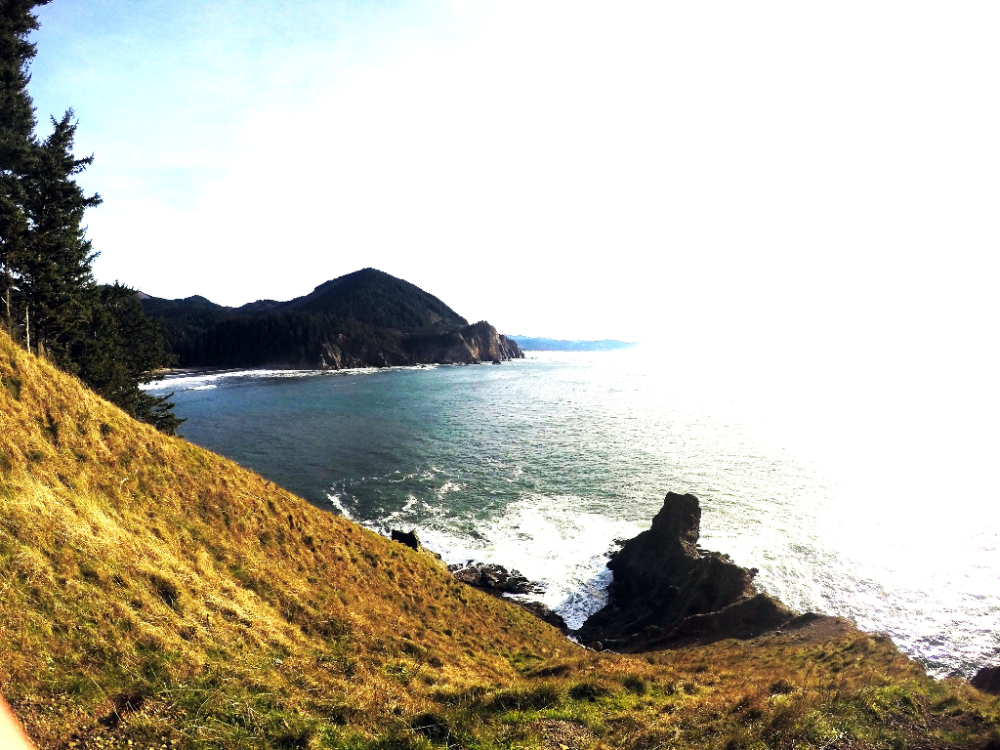
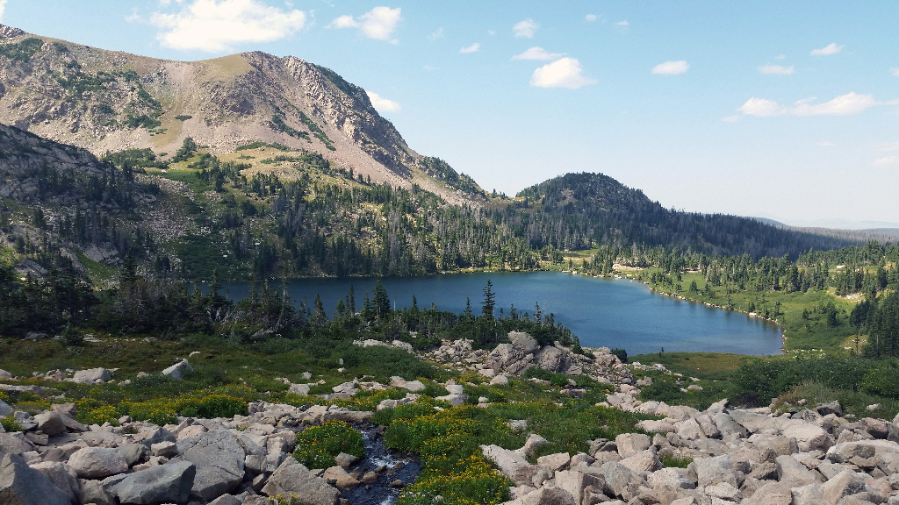
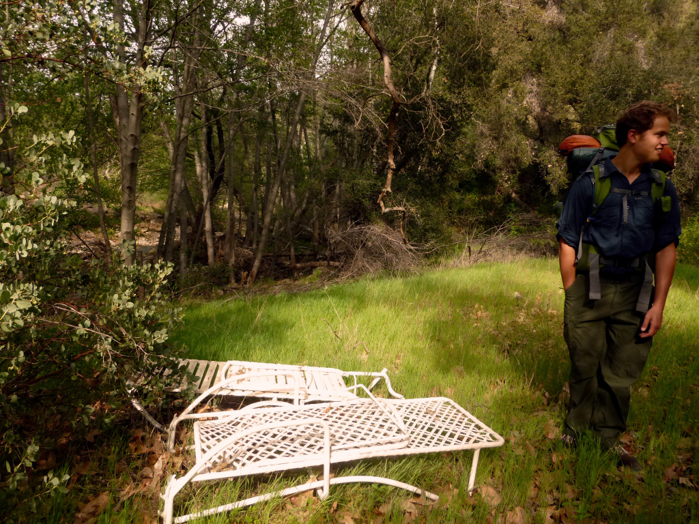
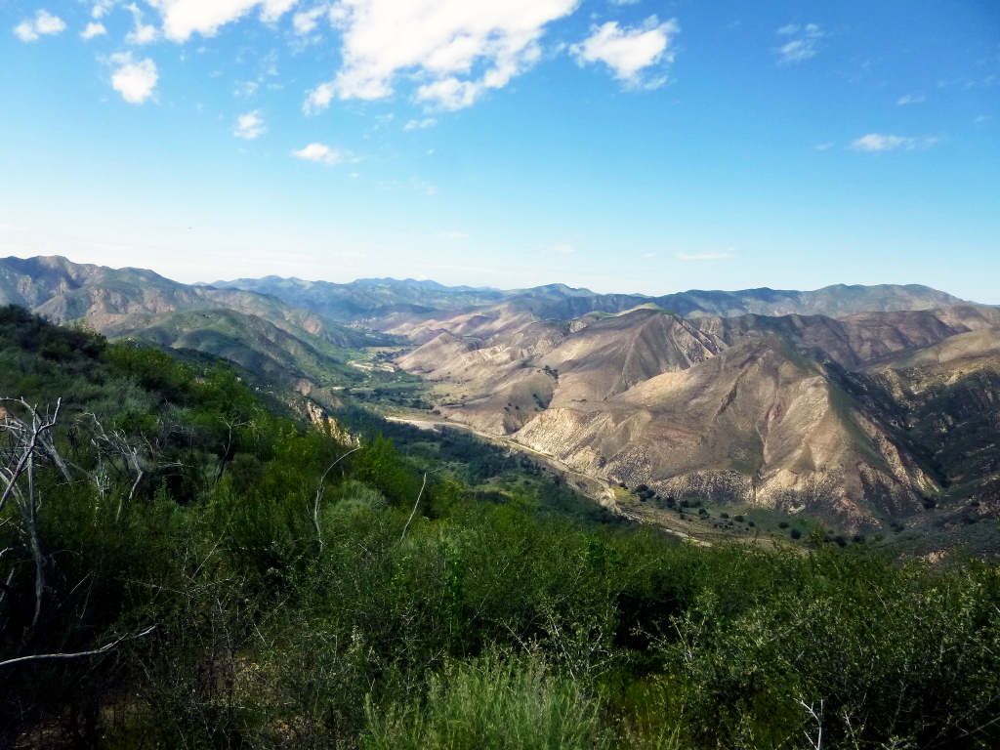
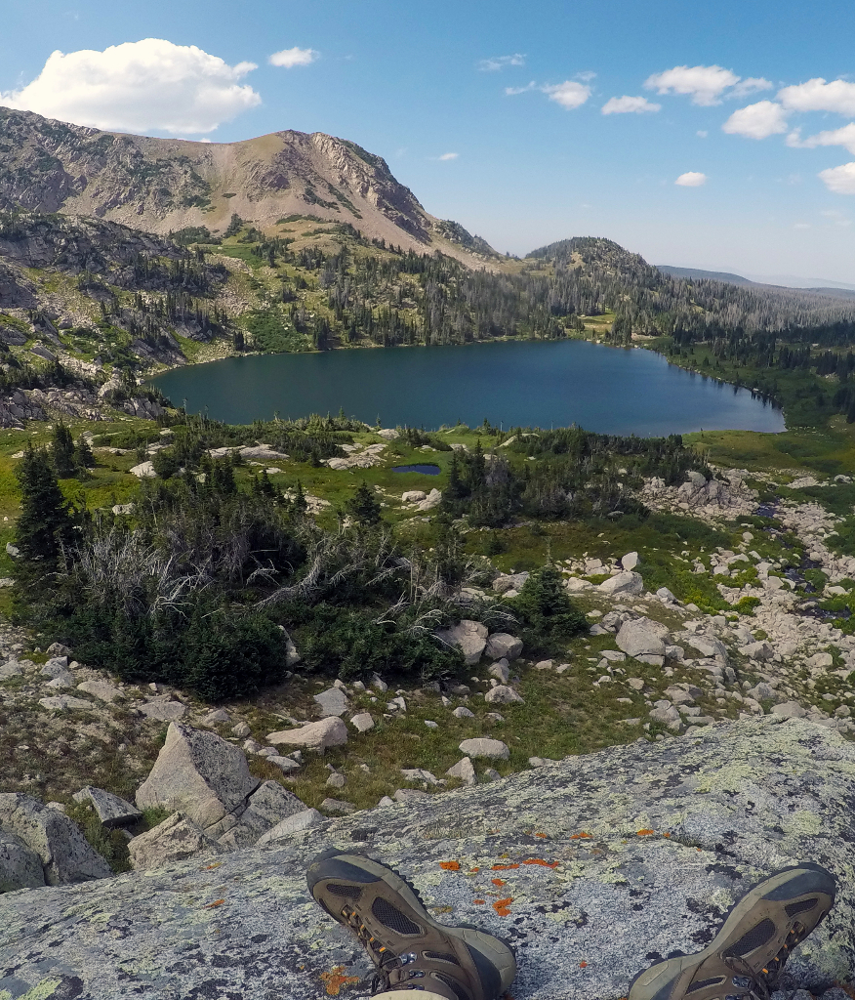
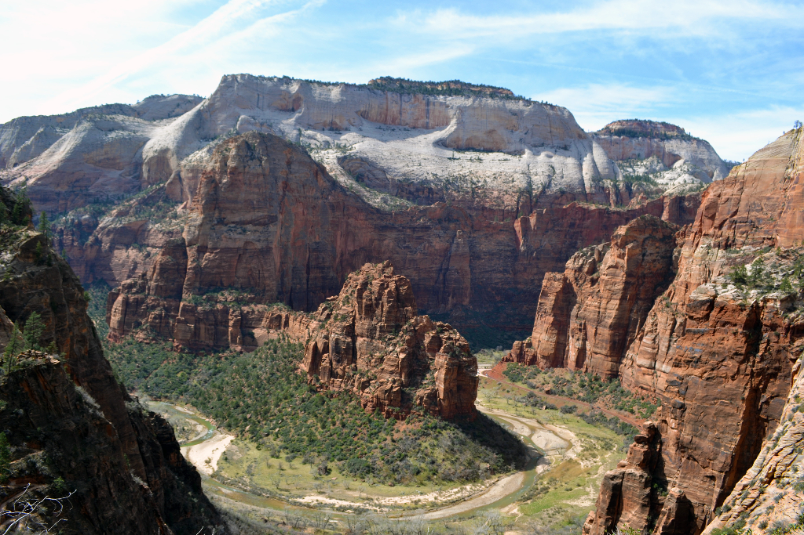
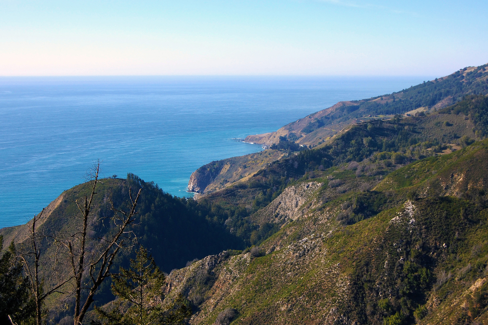
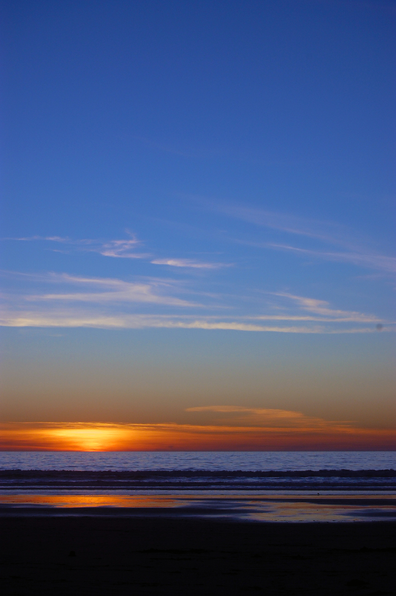
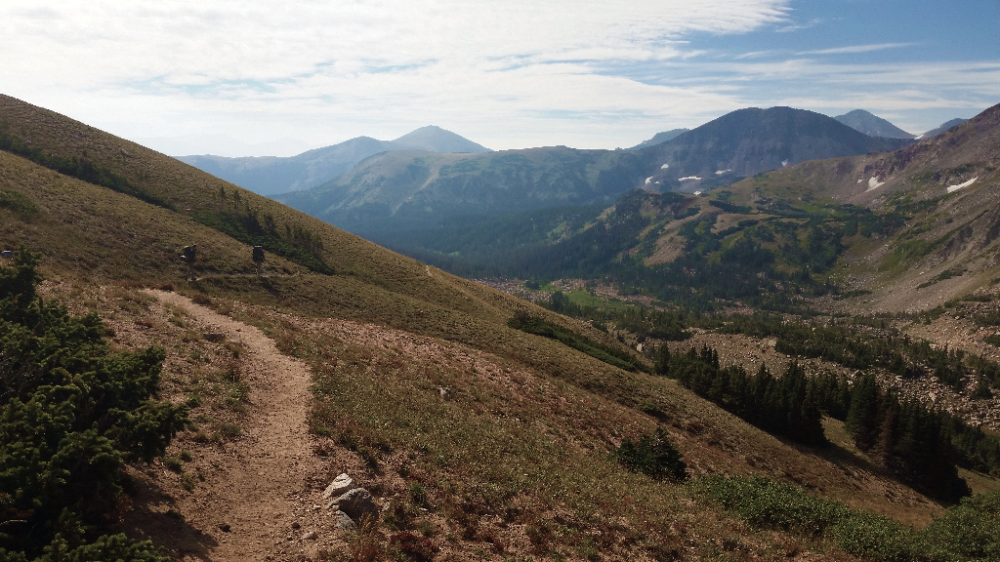
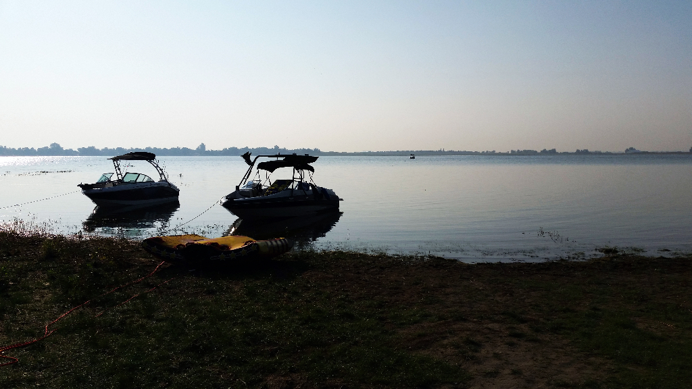

A Selection of Photography GrantOctober 28, 2015May 23, 2016 About Us, Galleries, Uncategorized Until we create more content for the site, enjoy a few galleries we’ve put together.  Facebook Twitter LinkedIn ← Bucket List New Beginnings →